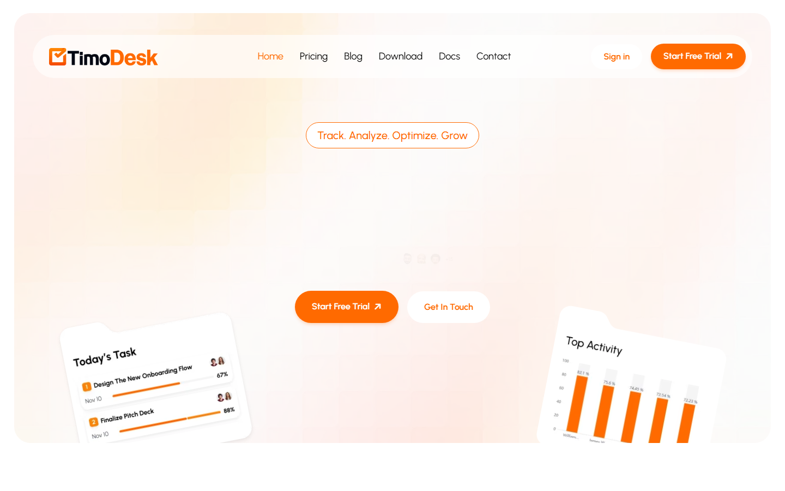
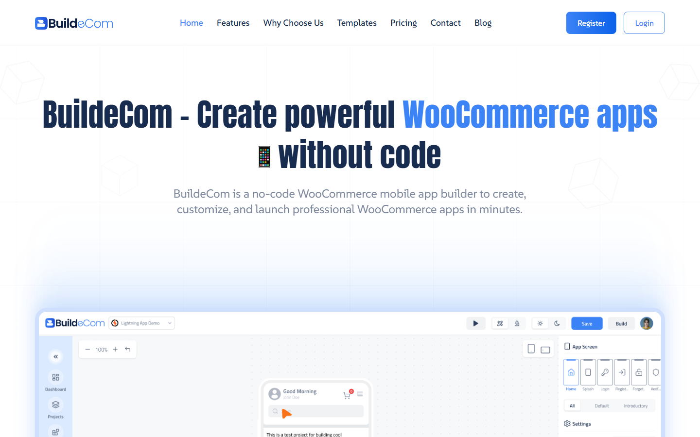
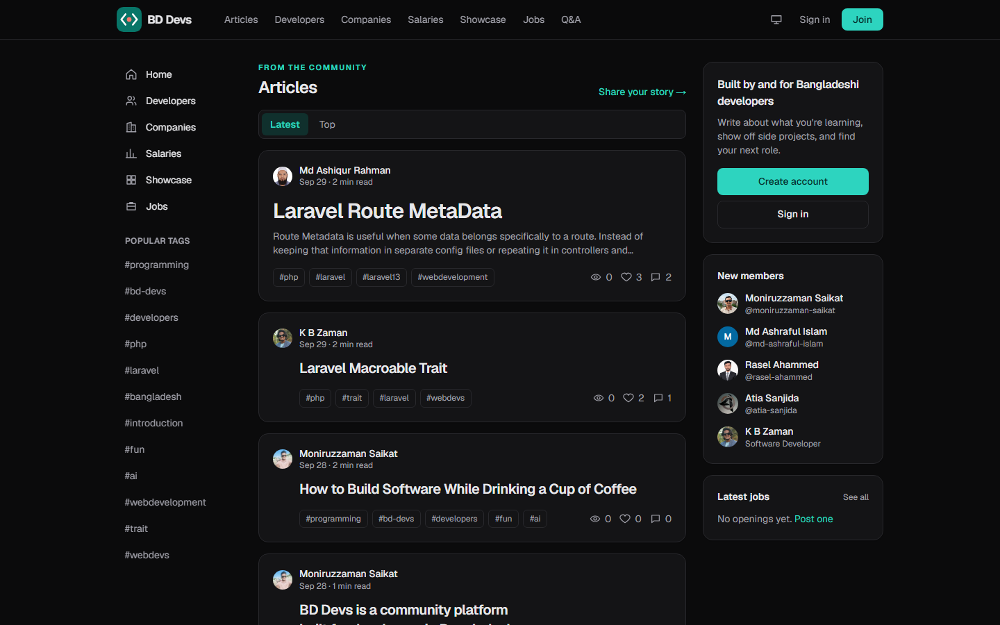

Moniruzzaman Saikat is a senior software engineer who uses AI to build production-grade software: SaaS products, desktop apps and automation tools.
I've been writing software for more than seven years. AI now sits in the middle of how I work, but shipping software that real people depend on still takes engineering judgement: clear architecture, careful review, tests and long-term maintenance. I use AI to move faster and I own everything that goes to production. I've launched two SaaS products this way. I also run BD Devs, a community platform for developers in Bangladesh. My GitHub has over 169 public repositories, mostly experiments and tools.
I'm equally happy close to the user, in a TypeScript interface, and close to the machine, tracking windows through the Win32 API in C++.
- Role
- Senior software engineer
- Experience
- 7+ years
- Location
- Dhaka, Bangladesh
- Shipped
- 2 SaaS products, 169+ public repositories
- Main stack
- Laravel, TypeScript, Electron, C++
- Approach
- AI-assisted, human-reviewed, production-ready
Building production-grade software with AI
AI makes writing code cheap. It does not make software good. What separates a demo from a product is everything around the code, so that is where I spend my attention.
I own the architecture
Data models, boundaries, security and trade-offs are decisions I make deliberately before any code is generated. AI fills in the implementation, not the design.
Every line is reviewed
Generated code is treated like a pull request from a new teammate. I read it, question it and rewrite it until it matches the codebase and my standards.
Tests and checks come first-class
Automated tests, type checking and linting verify AI output instead of trusting it. If it can't be verified, it doesn't ship.
Security and reliability are non-negotiable
Input validation, authentication, error handling and performance are checked on purpose, because AI tends to skip the unglamorous parts.
Built to be maintained
Readable code, sensible structure and documentation, so the software is still easy to change a year from now.
Shipped and supported
Deployment, monitoring and iteration after launch are part of the job. TimoDesk and BuildEcom are live products, not prototypes.
Products
-

TimoDesk
Time tracking and workforce analytics SaaS platform for teams. Built with TypeScript.
-

BuildEcom
No-code WooCommerce mobile app builder. Create, customize and launch store apps without writing code. Built with TypeScript.
-

BD Devs
Community platform for developers in Bangladesh, with articles, a developer directory, company listings, salaries, a project showcase, jobs and Q&A.
Open source
- win-trackActive window and URL tracker for Windows, written in C++.
- napiNative Node.js addon experiments using N-API and C++.
- design-patternsDesign patterns explained with documentation and code, in Python.
Skills
- Languages
- TypeScript, JavaScript, C++, Python, PHP, C#/.NET
- Frontend
- React, Next.js, Tailwind CSS
- Backend
- Node.js, Laravel, Yii, CodeIgniter, PostgreSQL, MongoDB
- Desktop
- Electron, Win32 API, N-API
- Other
- Git, Linux
Frequently asked questions
How does he use AI to build production-grade software?
AI speeds up implementation, while he owns architecture, reviews every line, verifies output with tests, type checks and linting, and handles security, deployment and long-term maintenance himself.
Who is Moniruzzaman Saikat?
A senior software engineer based in Dhaka, Bangladesh, with more than seven years of experience building SaaS products, desktop apps and automation tools.
What technologies does he use?
His main stack is Laravel, TypeScript, Electron and C++. He also works with JavaScript, Python, PHP, C#/.NET, React, Next.js, Node.js, PostgreSQL, MongoDB, Tailwind CSS, the Win32 API and N-API.
What products has he built?
Two shipped SaaS products, TimoDesk and BuildEcom, plus BD Devs, a community platform for developers in Bangladesh.
Where can I see his open source work?
On GitHub, which has more than 169 public repositories, including win-track, napi and design-patterns.
Contact
The best way to reach me is through LinkedIn or X. You can also find my writing on Dev.to and my code on GitHub.